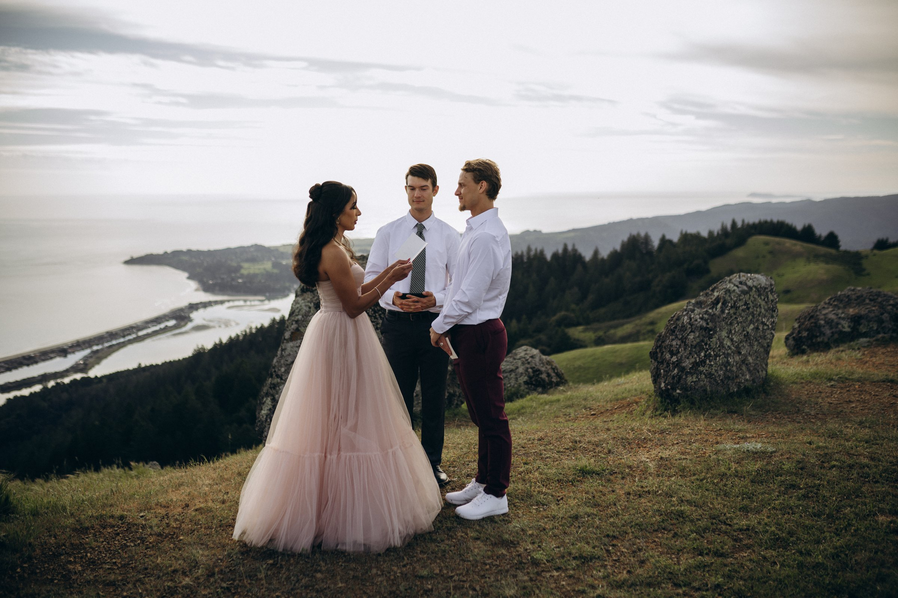
Simple Wedding Package
$1,8006 hours
- ✓6 hours of wedding day coverage
- ✓1 photographer
- ✓350+ edited photos
- ✓Online gallery
- ✓High-resolution downloads
- ✓Personal print rights
- ✓Sneak peek within 7 days
· ♥ ·
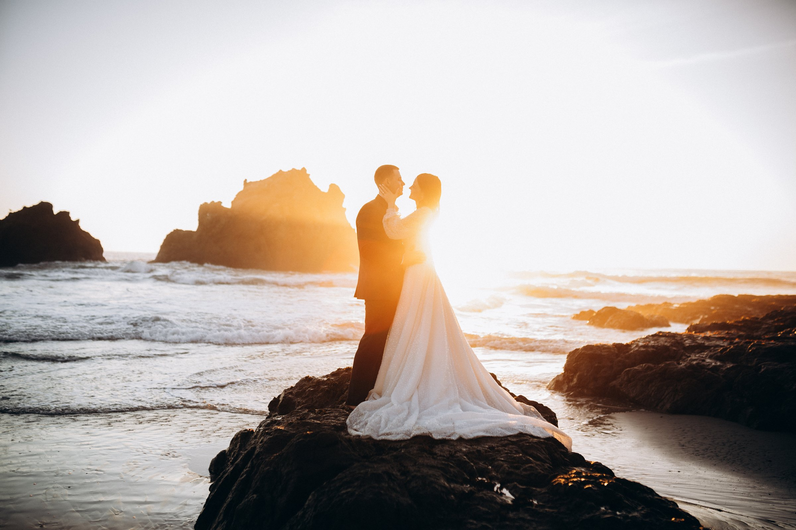
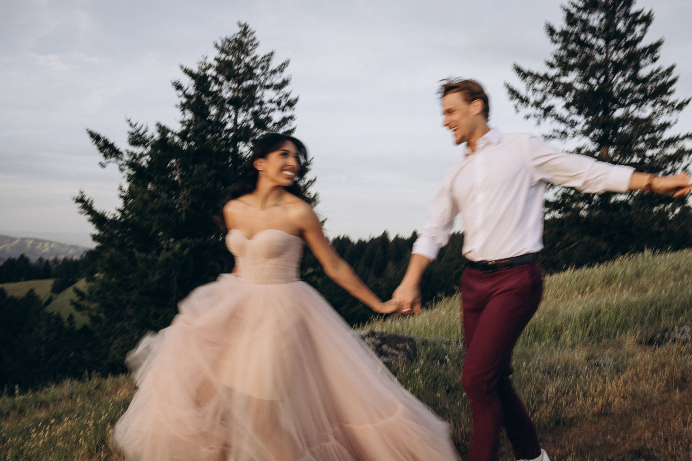
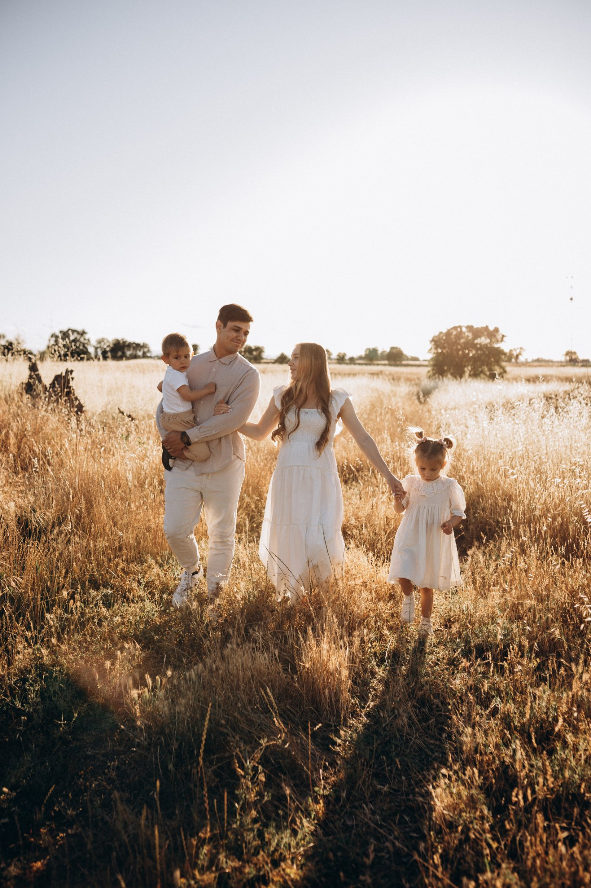
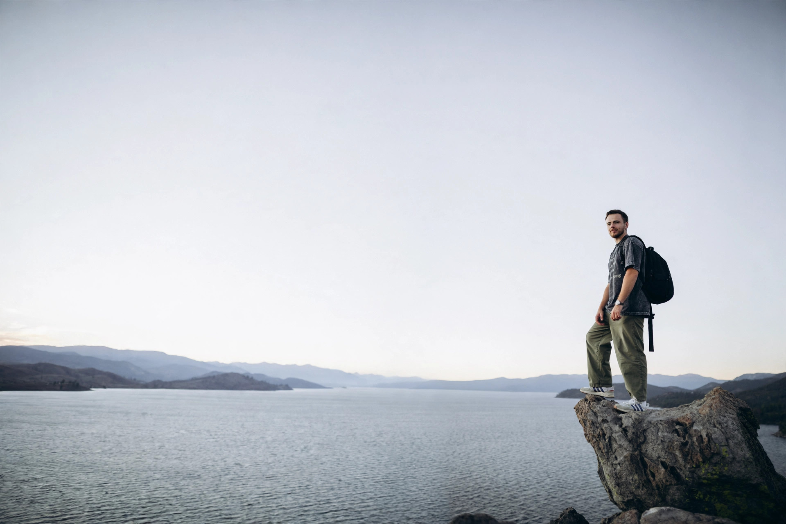
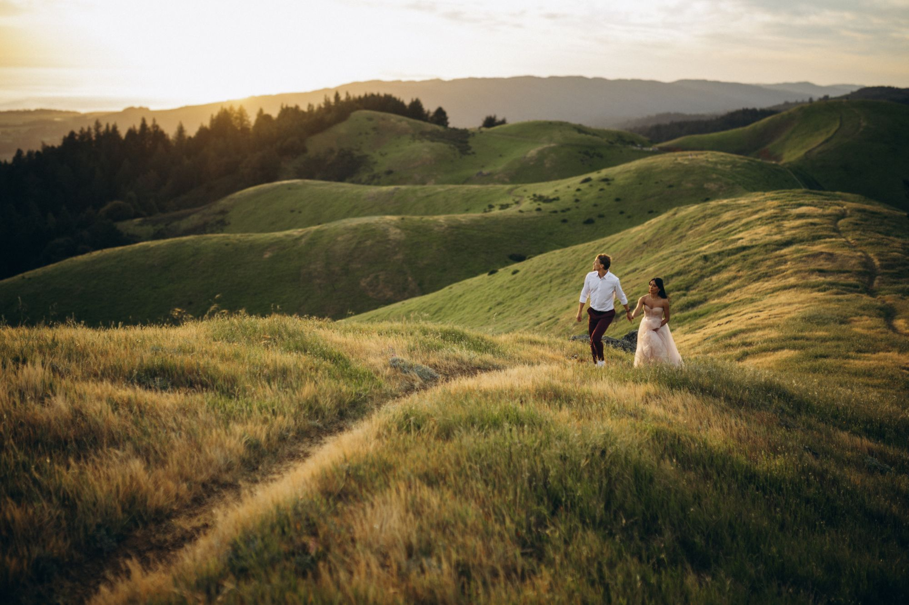
Tim Productions
Photographer · Sacramento, California
About Me
A Sacramento-based photographer who believes the best moments are the ones you don’t have to pose for.
I was born and raised in Chernivtsi, Ukraine, and in 2019, I moved to Sacramento, California — a place I’m now happy to call home.
My story with photography started long before I ever owned a professional camera.
As a kid, I’d sneak my parents’ little Fujifilm camera off the shelf and photograph pretty much anything I could find. Later, I got my first Nokia phone. The camera quality was absolutely terrible (seriously!), but I challenged myself to take pictures that actually meant something. Even back then, I wanted my photos to make people feel something.
I’ve been behind a camera since I was 14, spending much of that time in video production. Interestingly enough, it was my younger brother who encouraged me to take photography seriously. At first, my response was always, “I’m a video guy, not a photographer.”
Well, a few photos turned into my first photoshoot, one photoshoot turned into another, and here we are.
Funny how life works sometimes.
Here’s the thing about me: I don’t believe great photographs come from perfect poses.
Of course, I’ll help you find the best light, guide you when you need it, and make sure you’re looking your best. But I won’t spend our entire session telling you exactly where to put your hands or how to tilt your head.
I’d rather get to know you.
We’ll talk, laugh, probably exchange a few terrible jokes, and somewhere along the way, you’ll forget there’s even a camera around.
Because I don’t need to create the chemistry between two people. I just need to recognize it when it’s there.
And trust me, those little unscripted moments? They’re usually my favorites.
The excitement before a proposal. The tears when two people see each other on their wedding day. The joy of a family welcoming a new baby. The laughter, the hugs, the beautiful chaos of being human.
Sometimes those moments even get me a little emotional behind the camera.
I believe this ability to recognize beauty in people and preserve meaningful moments is a gift from God. It’s something I’m deeply grateful for, and something I never want to take for granted.
When I’m not photographing people, I’m probably out exploring somewhere.
I’ve traveled through about 23 U.S. states and 12 European countries, and I still have a pretty long list of places I want to see.
I love the mountains, the ocean, quiet places, making music, and those long conversations with friends that somehow turn into hours.
I’m also the kind of person who loves learning things I have absolutely no idea how to do. There’s just something exciting about discovering a new skill.
I guess curiosity has always been a big part of who I am.
Whether it’s your wedding, an engagement, a family session, or a moment you simply never want to forget, my goal is always the same.
I want you to feel comfortable, understood, and completely yourself.
By the end of our time together, I hope I feel less like someone you hired and more like an old friend you’ve known for years — who just happens to have a camera.
And when you look at your photographs 20 or 30 years from now, I hope you remember more than how everything looked.
I hope you feel the warmth of that day all over again.
The laughter. The nervous excitement. The happy tears. The people you love.
I hope every photograph brings back a story you’ll want to tell your children and grandchildren.
Because to me, a great photograph isn’t just something beautiful to look at. It’s a moment you get to feel all over again.
And I’d be honored to capture yours.
— Tim
Tap a shoot to open its gallery.
Tim Productions
Photography · Sacramento
Photo Shoots · Weddings · Families
Sacramento, California
Wedding Day
Four collections, one promise: your day photographed honestly and beautifully — the big moments, and the quiet ones in between.

$1,8006 hours
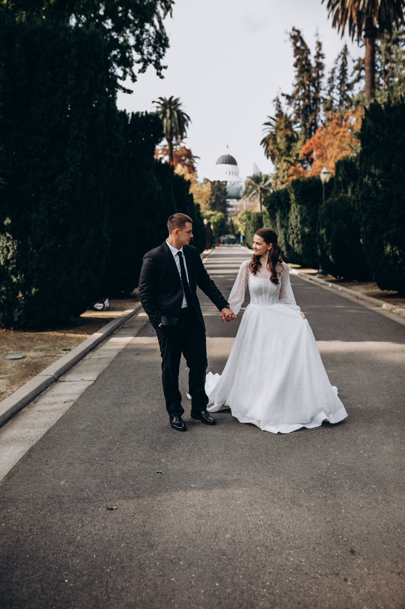
$2,4008 hours
$3,0008 hours · 2 photographers
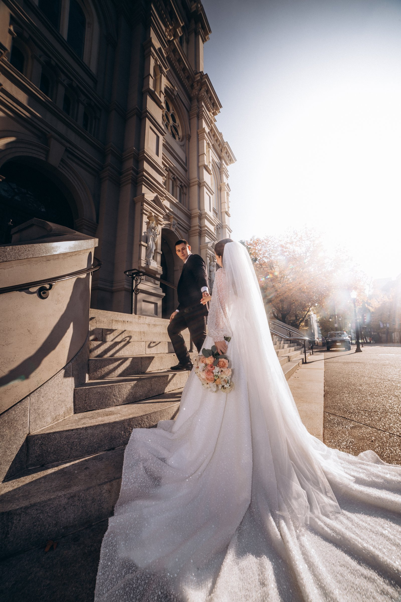
$4,50010 hours · photo + film
Make it yours
Add any of these to any wedding collection.
$300
$600
$400
$700
$400
$500
Custom quote
Before the big day
A relaxed hour or two together — perfect for save-the-dates, your wedding website, or simply because this chapter deserves to be remembered. Booked with a wedding collection, the engagement session is already included in the Full and Premium packages.
Engagement · Classic
$450 · 1 hour
Couples · Love Story
$350 · 1 hour
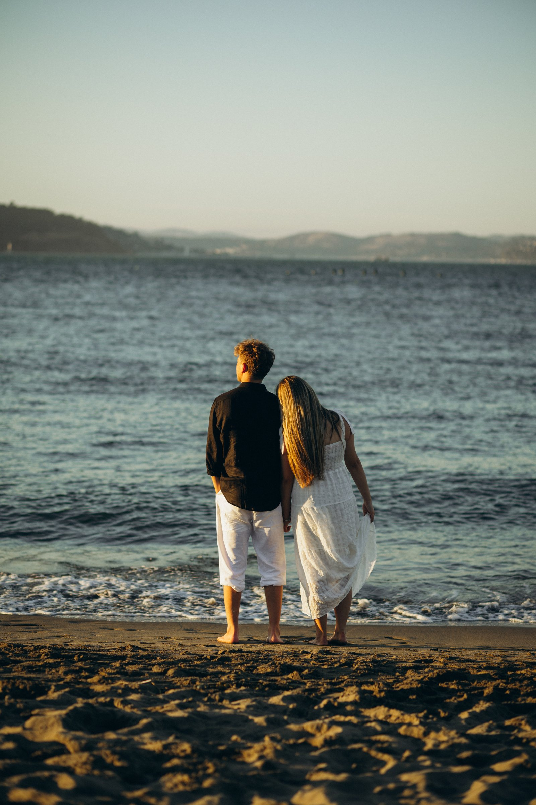
Couples · Mini
$250 · 30 minutes
Just because
$350 · 1 hour
Every chapter
The wedding is one day — the story keeps going. Warm, unhurried sessions for the seasons that follow.
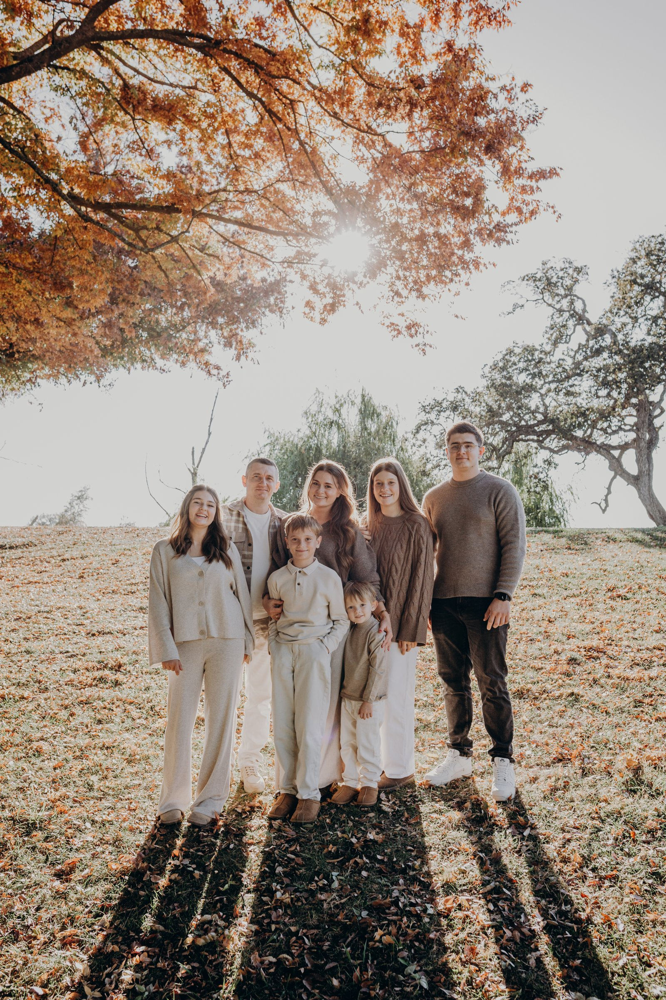
Family · Classic
$400 · 1 hour
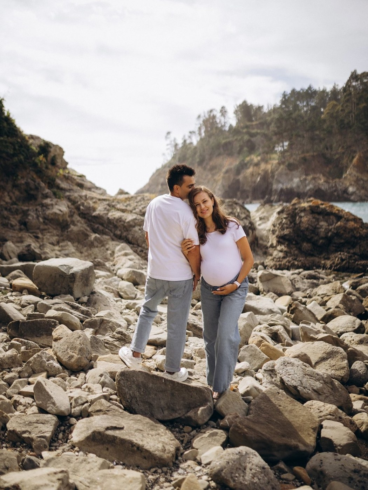
Family · Mini
$275 · 30 minutes
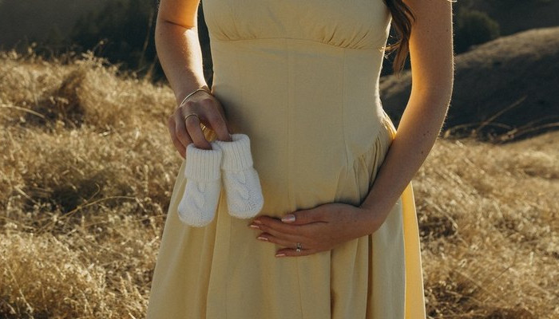
Pregnancy
$400 · 1 hour
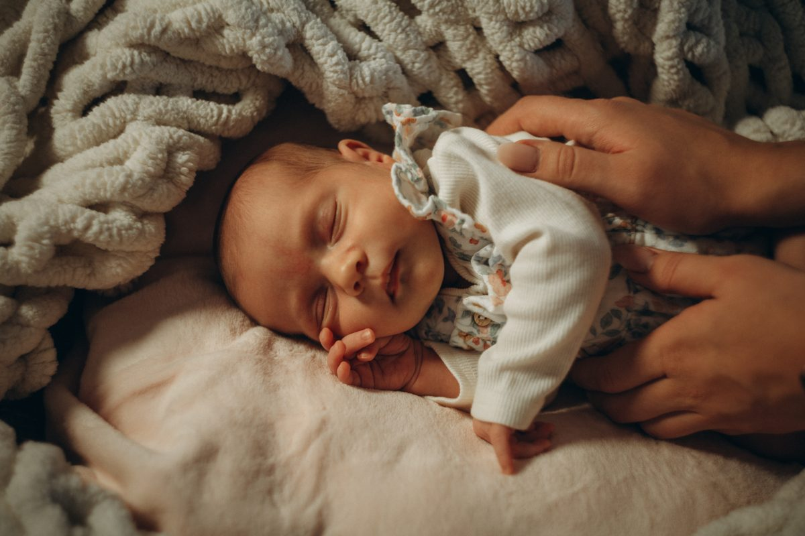
Newborn
$550 · up to 2 hours, at home
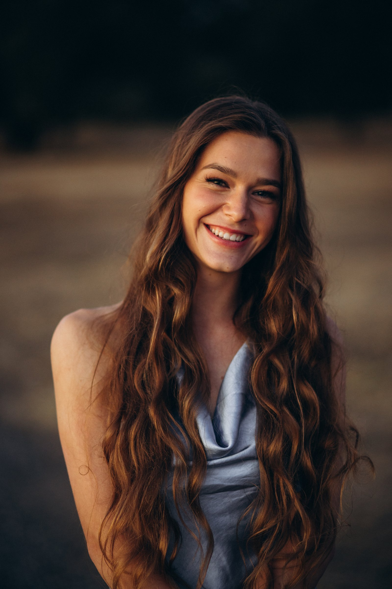
Portraits
$300 · 1 hour
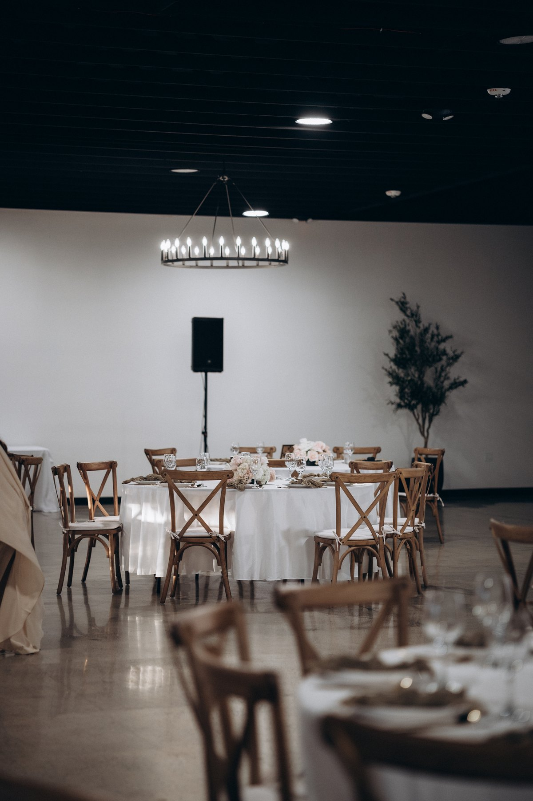
Celebrations
$300 · per hour, 2-hour minimum
Need something else — a proposal, a large extended-family gathering, a multi-day celebration? Custom packages are available upon request.
“So, whether you eat or drink, or whatever you do, do all to the glory of God.”
— 1 Corinthians 10:31 (ESV)
Photo shoots begin at $250, family sessions at $275, and wedding collections at $1,800 — most couples invest between $2,400 and $3,000. Custom packages available upon request.
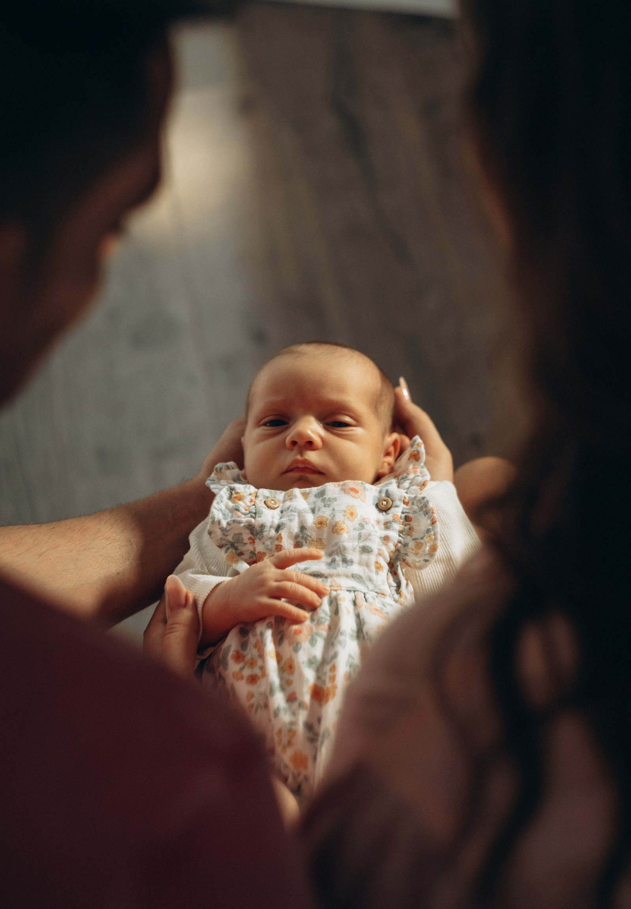
Booking
Send a message below with your date and the package you love. Dates are reserved in the order inquiries come in.
A short call or chat about your day, your venue and what matters most to you — no pressure, just a conversation.
A signed agreement and a retainer lock your date in the calendar. The rest is planning, together.
Your sneak peek arrives within days; the full edited gallery follows in your private online gallery, ready to download and print.
Yes — happily. Weddings and sessions across Northern California, including San Francisco and the Bay Area, Napa and Lake Tahoe. Travel outside the Sacramento area is quoted individually, based on distance.
Absolutely. Custom packages are available upon request — mix hours, add a second photographer, an album, or rehearsal dinner coverage until the collection fits your day exactly.
Every wedding collection includes a sneak peek — within 7 days on the Simple package, within 72 hours on Classic and Full, and within 48–72 hours on Premium. Your full gallery is delivered online in high resolution, with personal print rights. In a hurry? Add rush delivery for $400.
It's the easiest way to feel comfortable in front of the camera before the wedding — and you'll have photos for save-the-dates and your wedding website. It's included in the Full and Premium wedding collections, or $450 on its own.
Let's talk
Pick what you're interested in — your message is ready to copy and send.
Instagram: @_tim_productions · Portfolio & recent work live there
Phone / text: +1 (916) 827-9377 · Sacramento, California